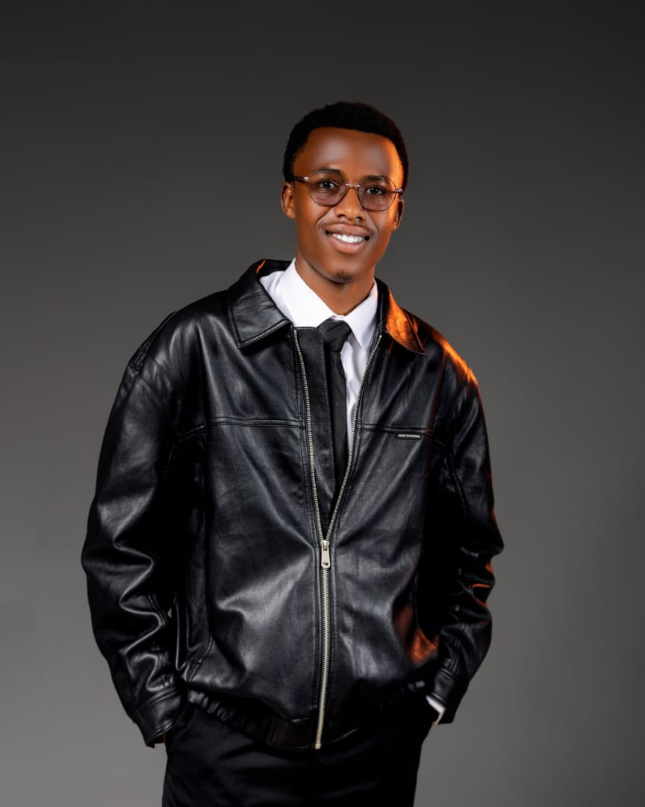

Help children keep learning
School materials, encouragement and mentorship can help a young person stay engaged and build confidence.
Our education focusFuture Light Foundation brings people together around children and young people who need support. We believe in practical help, access to learning, and a community that takes time to care.

The foundation grew from a simple belief: a child facing hardship should not have to face it alone.
We are building this work in Rwanda by bringing people, skills and resources together around children and young people. We are at the beginning of that journey, and we want our actions—not big promises—to show what the foundation stands for.
Read our storyThese are the areas we are working to build around local needs. We will share specific activities and results as they happen.
School materials, encouragement and mentorship can help a young person stay engaged and build confidence.
Our education focusWe want support to be practical, respectful and shaped by the needs children and families experience.
Our wellbeing focusVolunteers and community partners can share time, knowledge and encouragement where it is useful.
Our community focus